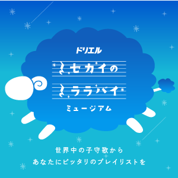
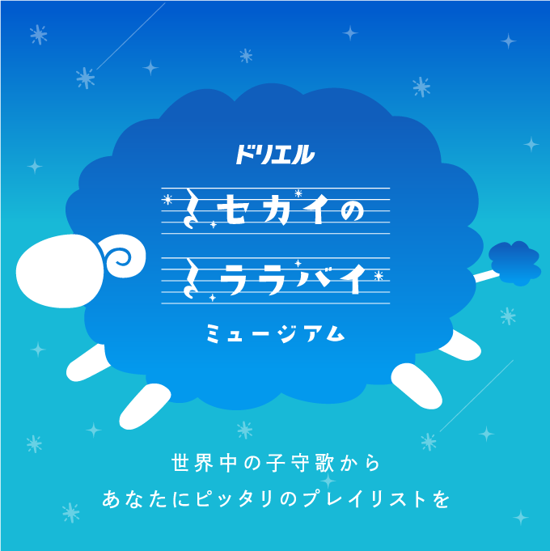
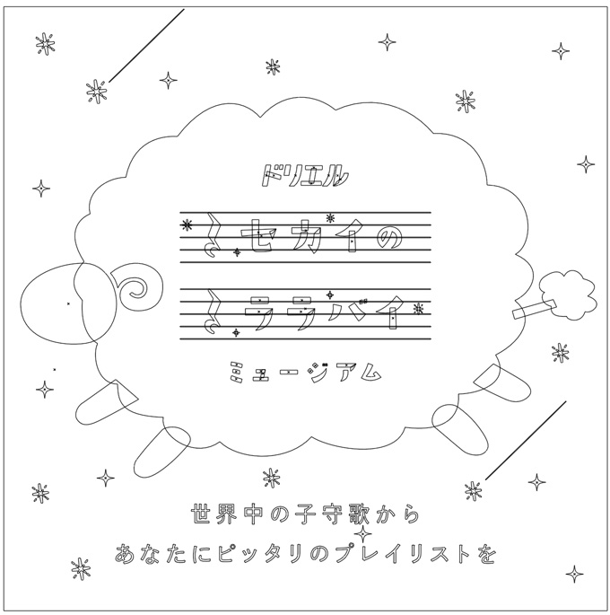
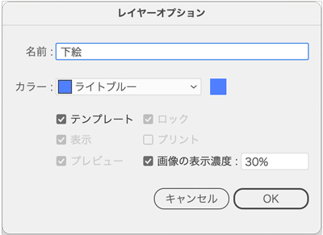
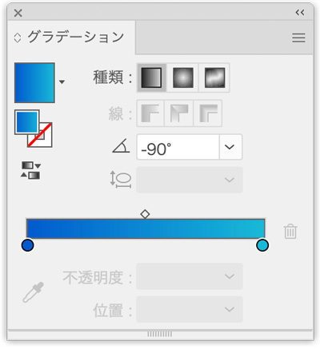
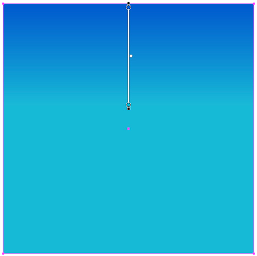
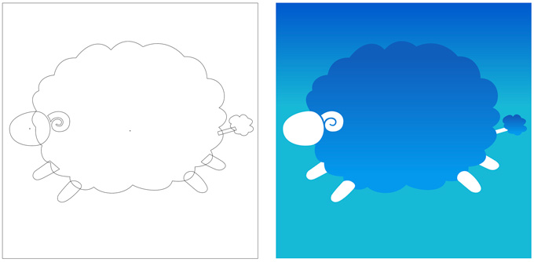
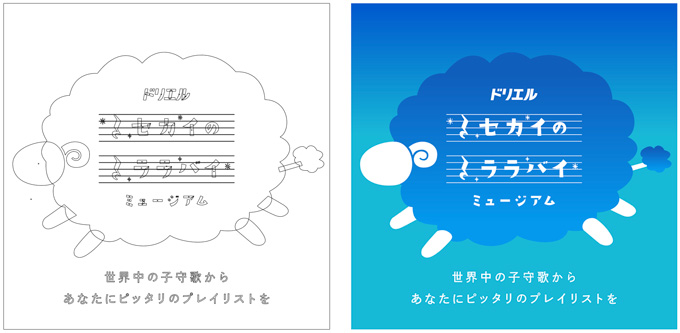
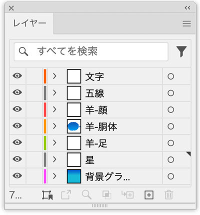

ドリエル

- トレース
- 引用元「BANNER LIBRARY」
完成例
 
描画ポイント
- 画像は、配置したレイヤーの「サムネイル」をダブルクリックして「テンプレート」にチェックを入れる

背景は、グラデーションを設定


ペンツールで「羊」を描く
- バナー実物のような、羊の形にテクスチャーは入れていません

文字を「トレース」と入力

星と流れ星を追加
- 星と流れ星は、不透明度を30〜40％程度にする
